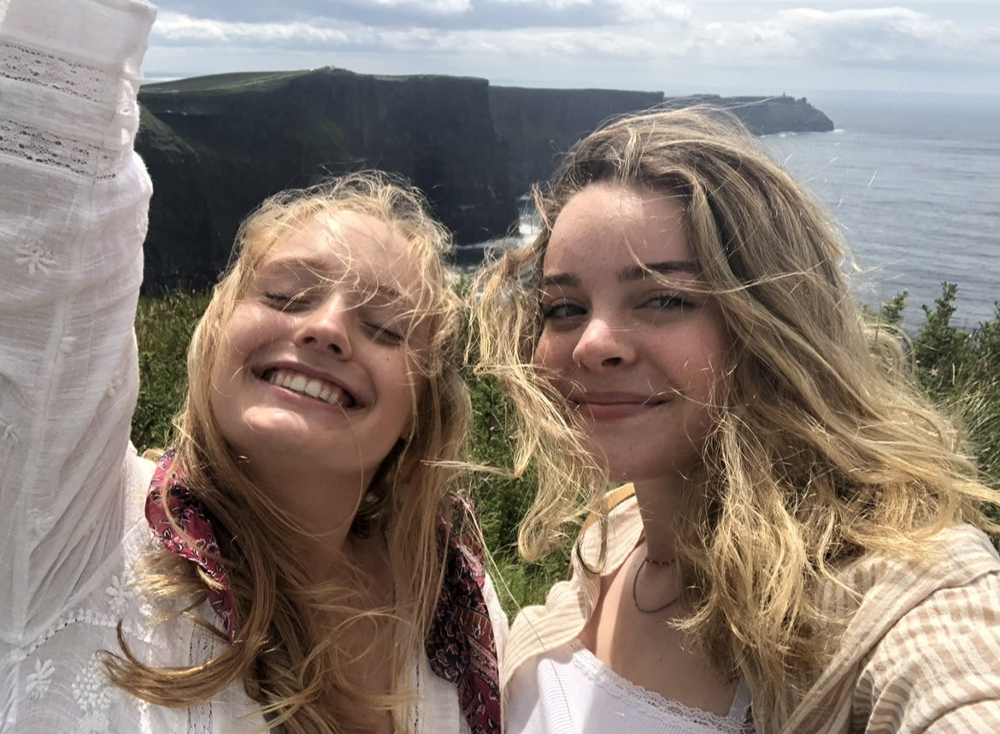

Growing up in an Irish family has created a huge sense of pride for Ireland. I grew up eating potatoes and carrots with every meal and my grandma made the best corned beef ever. My grandma, who my family called little grandma, died January 2019, so being able to visit the place where she grew up next summer was extra special. I saw the house where she grew up and how overgrown it had become. I saw the farm that my dad would work on every summer growing up. I metall of my grandma's sisters who would cry as I told them stories about her. All of her siblings stayed in Ireland when she moved to Boston when she was just 17. I felt more connected to her than ever.
I also loved Dublin and Galway. Dublin was so cute and lively. I went to a Gaelic football game which was so fun and very different from American football. I ate the best breakfast every morning it’s true that Irish sausage is the best sausage). Personally, I enjoyed Galway more because it was more lively and there was a better energy. It was so cute with all of the flags hanging above the pedestrian village area. There were a lot of street performers which made the experience even better. I saw people on stilts, people dancing, singing, mimes, and more! We ate at a really nice Michelin star restaurant by the water and I had a really good pasta dish.